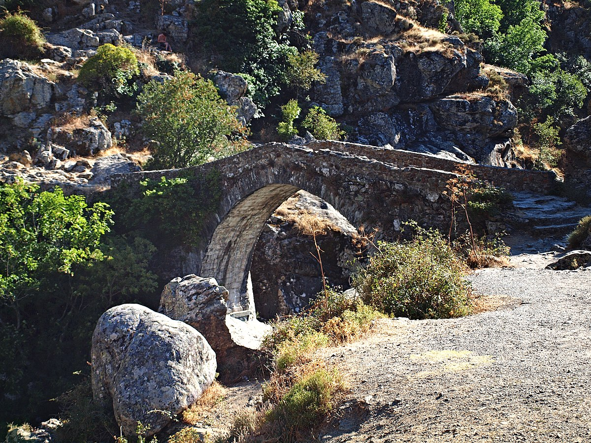

Az Asco folyó felett átívelő, helyi gránitból emelt híd a Genovai Köztársaság építészeti zsenialitásának egyik legszebb fennmaradt példája a szigeten. Ezeket a hidakat úgynevezett szamárhátívvel (pont en dos d'âne) tervezték: a középen magasra törő, finoman csúcsosodó szerkezet és a szárazon rakott, mégis elmozdíthatatlan kőtömbök zseniális statikai megoldást jelentettek. Ez a sajátos forma tette lehetővé, hogy a híd rugalmasan ellenálljon a tavaszi hóolvadás vagy a heves őszi viharok idején hirtelen és brutális módon megáradó Asco folyó hatalmas víznyomásának, amely az évszázadok során a modernebb betonkonstrukciókat is többször romba döntötte.
Kultúrtörténeti szempontból a híd sokkal több egy puszta közlekedési műtárgynál: ez a kőív volt a sziget hagyományos gazdasági motorjának, a legelőváltó pásztorkodásnak (transhumance) az egyik legfontosabb stratégiai pontja. Évszázadokon át ezen a keskeny, korlátok nélküli hídon vonultak át a Niolo és az Asco völgyéből származó pásztorok, akik a nyári hőség elől a magashegyi, dús legelőkre hajtották nyájaikat, majd ősszel ugyanezen az útvonalon tértek vissza a szelídebb part menti síkságokra. A híd így a kemény, áldozatos korzikai hegyi élet, a családi tradíciók és a természettel való harmonikus együttélés szimbolikus mementójává vált az utókor számára.
A műemlék közvetlen környezete vizuálisan és esztétikailag is lenyűgöző, ahol a természet vad színei drámai egységet alkotnak az ember alkotta kőívvel. A híd alatt az Asco folyó kristálytiszta, jéghideg vize hatalmas, simára csiszolt gránit- és vöröses porfírtömbök között zubog, mély, természetes sziklamedencéket (piscines naturelles) vájva a mederbe. Ezek a smaragdzölden és türkizkén ragyogó medencék a nyári hónapokban a sziget legszebb természetes fürdőhelyeivé válnak. A kora délutáni órákban, amikor a napfény telibe világítja a szurdokot, a híd kecses tükröződése a mozdulatlan víztükrön, a háttérben magasodó feketefenyők zöldje és a folyó morajlása olyan katartikus, meditatív élményt nyújtanak, amely végleg rabul ejti a vándort.